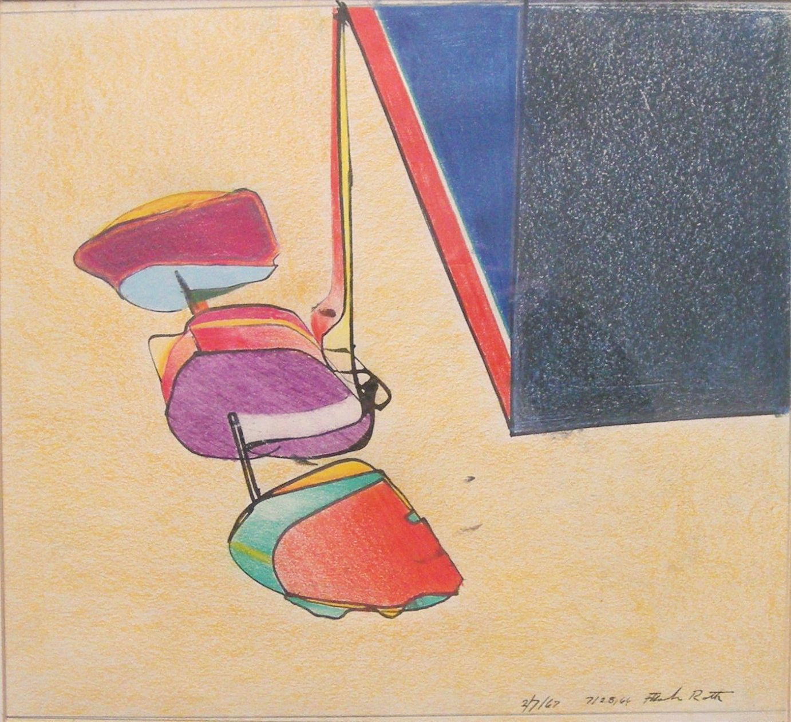

Frank Roth
1936 – 2019
Artist Biography
American abstract painter, born in Boston in 1936. Moved in 1954 to New York, where he studied first at the Cooper Union Art School and then in 1955 at Hans Hofmann's school. First one-man exhibition at the Artists' Gallery, New York, 1958. Began by painting in a romantic Abstract Expressionist style, with large, loose-edged patches of colour, then developed a more restless, active treatment with loops, intercepted lines and torn shapes. Travelled in Europe and Mexico, then returned to New York, where he has taught since 1963 at the School of Visual Arts. In the 1960s and 1970s he also taught at the University of California, Berkeley and elsewhere. Received various awards, including a Guggenheim Fellowship 1964; Ford Foundation Artist-in-Residence at Rhode Island University 1966. By 1965 had begun to paint geometrically precise compositions containing somewhat Surreal forms suggesting car or aeroplane parts, tensely balanced in what could be a bright, clear sky. In the late 1960s reverted to a more abstract and delicate style, leading to works with a profusion of small forms floating in front of a background dappled with light and shade. Now lives in East Hampton, New York. Roth has had numerous solo exhibitions including Annely Juda in London in 1965 and 1967, the Martha Jackson Gallery, New York in 1968 and 1971 and Utah Museum of Fine Art in 1967. Mixed exhibitions included Leo Castelli Gallery and Louis K Meisel galleries in New York. Poet and Art Critic John Perrault wrote an article in the New York Magazine in May 1968, calling Roth a ‘remarkable artist’ and his neo-Surrealistic work ‘magical mystery paintings’ and ‘“illusionistic” and yet modern and abstract’‘. A photographic portrait taken of Roth in 1962 is in the Smithsonian Collection and Roth’s work is held in top American collections including the Whitney, Walker, Corcoran, Albright-Knox and Norton-Simon museums and galleries and Yale, Buffalo and Duke universities. In the UK Roth’s paintings are in the Leicestershire County Council collection and the Tate Modern, London.

Untitled, 1967